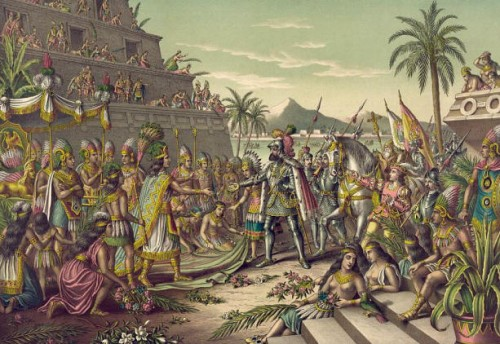
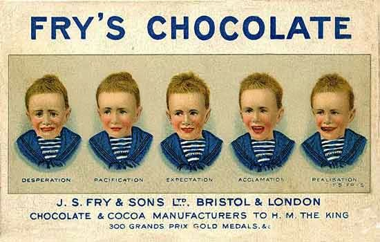
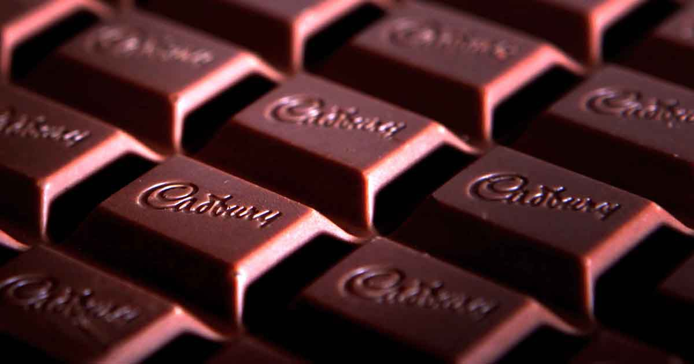

The history of chocolate goes very far back in time. In fact, it was so long ago that historians are not sure about the exact time people discovered that cocoa beans (also spelled: cacao beans) could be made into food. Historians suggest that the consumption of chocolate has been around for about 2000 years but there was cocoa residue found on Mayan pottery that was estimated to date as far back as 1400 BCE; suggesting that it has been around for even longer.
Pictured below: an Ancient Mayan Pot.
The first people to consume “chocolate” were the Ancient Mayans and Aztecs. They took the cocoa seeds out of the pods, fermented them in a leaf-covered pile, roasted them in a fire and then mixed with water and seasonings to make a frothy drink. Although this “chocolate” was also made from cocoa beans just like ours in the present day, it was made in was rather different from. The chocolate they drank was a very bitter drink that was thought to be divine. Because they believed that cocoa beans were magical, the “chocolate” drink was used in sacred rituals of birth, marriage and death.
Go to top
Upon the Spanish explorer Hernando Cortes' arrival to the Americas, as legend says, he was mistaken for a reincarnated deity by the Aztec king and he was invited to eat a feast that included the cocoa drink. He and the other Europeans did not like the bitterness of the drink was but once honey and sugar cane were added to sweeten the drink, they took to back to their homeland. It became popular to the rich and powerful in Spain and eventually across Europe (but still only to the rich) by the 1600s.
Depiction of Hernando Cortes meeting the Aztecs.

Go to top
“Dutch cocoa” was made by the Dutch chemist Coenraad Johannes van Houten in 1828. “Dutch cocoa” is powdered chocolate made by the “cocoa pressing method” which is making powdered chocolate by removing cocoa butter from the chocolate then ground down what remained into powder and treating it with alkaline salts to remove the bitterness.
The first chocolate bar was made in 1847 by Joseph Fry who added melted cocoa butter back into Dutch cocoa to make a thick chocolate paste.

In 1868 Cadbury started to sell boxed chocolate and Nestle started to sell milk chocolate a few years after that. They were the first companies of many to come that sold solid chocolate and are still well known chocolate brand names today. From then on chocolate was starting to be consumed by the wider public instead of just being reserved for the rich and powerful.

Go to top
In the present day, there are more brands and companies selling chocolate and many more types of the sweet cocoa treat being produced. Because of advancing technology chocolates are being made in higher quality and higher quantity, but handmade chocolates are still an interest of artisans. Chocolate has become more popular among people everywhere.
Go to top